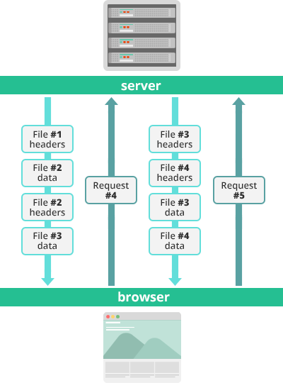

Multiplex
-
Параллельные мультиплексированные запросы и ответы не блокируют друг друга.
-
Несмотря на передачу многочисленных потоков данных, для наибольшей эффективности использования сетевых ресурсов используется одиночное TCP-соединение.
-
Больше не нужно применять оптимизационные хаки, наподобие спрайтов, конкатенации, фрагментирования доменов и прочих, которые негативно сказываются на других сферах сетевой производительности.
-
Задержки ниже, производительность сети выше, лучше ранжирование поисковыми системами.
-
В сети и IT-ресурсах уменьшаются операционные расходы и капитальные вложения.

-
Инициативно передаваемые ресурсы сохраняются в кэше клиента.
-
Клиент может многократно использовать эти ресурсы на разных страницах.
-
Сервер может мультиплексировать инициативно передаваемые ресурсы вместе с запрошенной информацией в рамках того же TCP-соединения.
-
Сервер может приоритезировать инициативно передаваемые ресурсы. Это ключевое отличие с точки зрения производительности между HTTP/2 и HTTP 1.
-
Клиент может отклонить инициативно передаваемые ресурсы для поддержания эффективности репозитория, или может вообще отключить функцию Server Push.
-
Клиент может также ограничивать количество одновременно мультиплексированных потоков с инициативно передаваемыми данными.
Бинарный протокол
-
Низкие накладные расходы при парсинге данных — критически важное преимущество HTTP/2 по сравнению с HTTP 1.
-
Ниже вероятность ошибок.
-
Меньше нагрузка на сеть.
-
Эффективное использование сетевых ресурсов.
-
Решение проблем с безопасностью, наподобие атак с разделением запросов (response splitting attack), проистекающих из текстовой природы HTTP 1.x.
-
Реализуются прочие возможности HTTP/2, включая сжатие, мультиплексирование, приоритезацию, управление потоками и эффективную обработку TLS.
-
Компактность команд упрощают их обработку и реализацию.
-
Выше эффективность и устойчивость к сбоям при обработке данных, передаваемых между клиентом и сервером.
-
Снижение сетевой задержки и повышение пропускной способности.
-
Эффективную приоритезацию потоков.
-
Эффективное использование механизмов мультиплексирования.
-
Снижает накладные расходы при использовании ресурсов. Это один из первых вопросов, обсуждаемых при сравнении HTTP/2 с HTTP 1 и SPDY.
-
Кодирование больших и часто используемых заголовков, что позволяет не отправлять весь фрейм с заголовком. Передаваемый размер каждого потока быстро уменьшается.
-
Устойчивость к атакам, например, CRIME — эксплойтам потоков данных со сжатыми заголовками.
| HTTP 1.x | SPDY | HTTP2 |
|---|---|---|
| SSL не требуется, но рекомендуется. | Необходим SSL. | SSL не требуется, но рекомендуется. |
| Медленное шифрование. | Быстрое шифрование. | Шифрование стало ещё быстрее. |
| Один клиент-серверный запрос на одно TCP-соединение. | Много клиент-серверных запросов на одно TCP-соединение. Осуществляются одновременно на одном хосте. | Многохостовое мультиплексирование. Осуществляются на нескольких хостах в одном экземпляре. |
| Нет сжатия заголовков. | Введено сжатие заголовков. | Используются улучшенные алгоритмы сжатия заголовков, что повышает производительность и безопасность. |
| Нет приоритезации потоков. | Введена приоритезация потоков. | Улучшенные механизмы приоритезации потоков. |
Test #1 – Size of Request and Response Headers
WINNER: HTTP/2
HTTP/2 has significantly smaller header sizes due to its use of the HPACK algorithm.
Test #1 – Size of Request and Response Headers
WINNER: SPDY
he larger response bodies seen on the Google servers are due to the use of padding in data frames. Although, HTTP/2 p